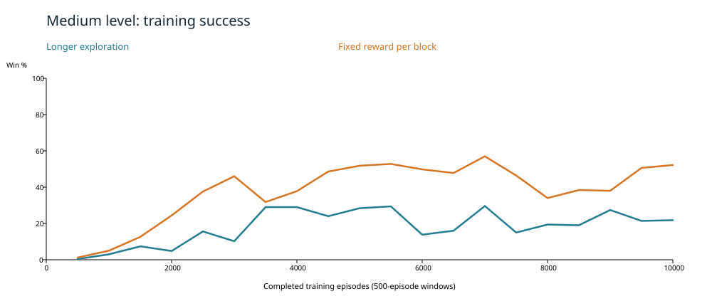
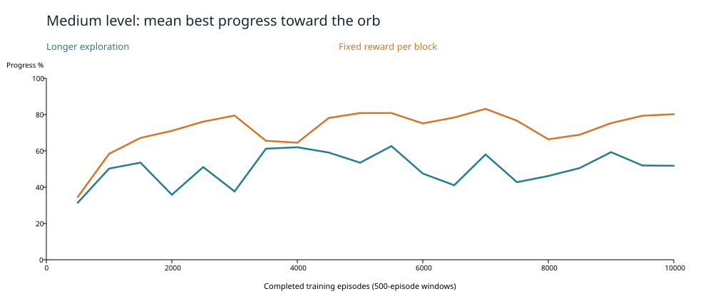
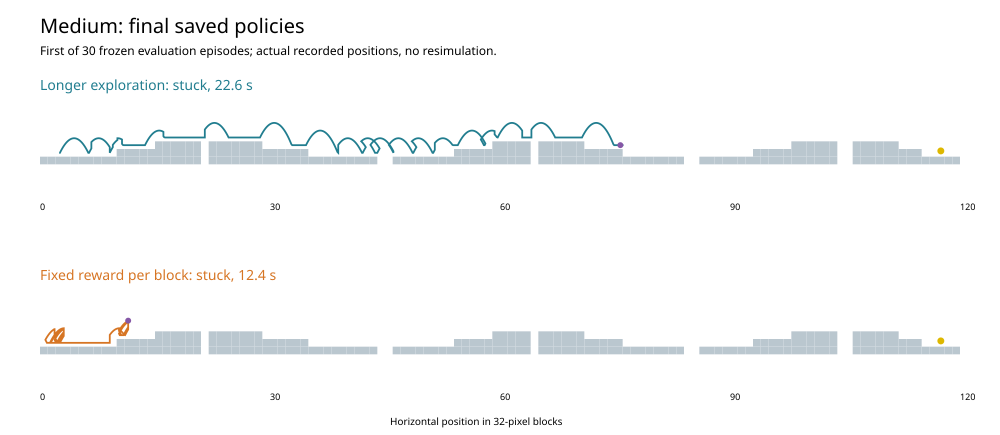
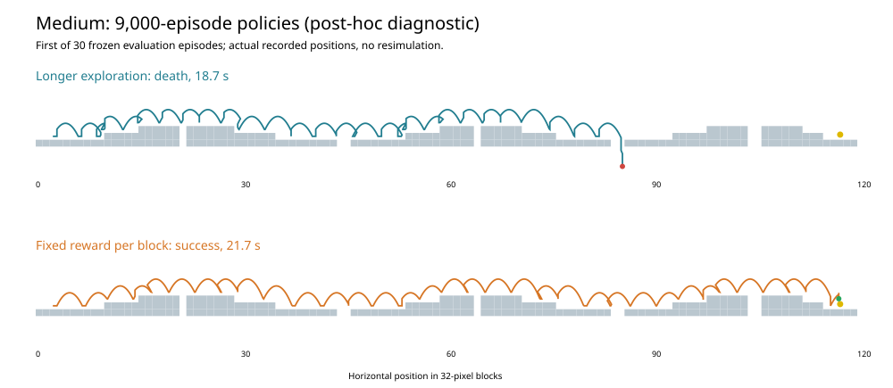

October 29, 2026. Two fresh 10,000-episode training sessions on the identical frozen Medium level, with eight-second stuck detection and the normal 60-second overall limit.
Fixed reward produced 3,819 training wins versus 1,823 for Longer exploration, with fewer stuck endings (437 versus 2,124). Training success includes exploration and ongoing learning; the frozen-policy results are a separate test. The fixed-reward 9,000-episode checkpoint won 30/30 matched diagnostic evaluations, but its final 10,000 checkpoint won 0/30. This demonstrates late policy regression in this run: the final checkpoint is not the best saved policy.
Learning rate 0.1; discount 0.95; exploration decay 0.999, floor 0.05; identical physics, observations, terminal rewards, and decision timing. Only the progress reward differs.
| Method | Training wins | Last 5,000 wins | Final frozen wins | Final eval mean best progress | First training win | Deaths | Stuck | Timeouts |
|---|---|---|---|---|---|---|---|---|
| Longer exploration | 1,823 / 10,000 (18.2%) | 21.3% | 0 / 30 | 64.0% | 425 | 5,913 | 2,124 | 140 |
| Fixed reward per block | 3,819 / 10,000 (38.2%) | 46.7% | 0 / 30 | 7.8% | 385 | 5,701 | 437 | 43 |



After both final policies failed all 30 evaluations, both 9,000-episode policies were evaluated with the identical 30 evaluation seeds. This additional diagnostic did not add training or change the scheduled check-ins. The 9,000 checkpoint was chosen after observing the final failures and the preceding successful fixed-reward check-in.
| Method at 9,000 | Frozen wins | Mean winning time | Deaths | Stuck |
|---|---|---|---|---|
| Longer exploration | 0 / 30 | — | 30 | 0 |
| Fixed reward per block | 30 / 30 | 21.7 s | 0 | 0 |

One frozen-policy evaluation after each 1,000 training episodes. Evaluation never updates the policy or advances training RNG. Links point to native recordings, readable in the project replay viewer.
| Training episodes | Longer exploration | Fixed reward per block |
|---|---|---|
| 1,000 | stuck, 9.0 s, best progress 5.7% | stuck, 13.7 s, best progress 29.6% |
| 2,000 | stuck, 8.0 s, best progress 0.0% | death, 20.9 s, best progress 89.5% |
| 3,000 | death, 11.7 s, best progress 38.1% | death, 26.9 s, best progress 89.6% |
| 4,000 | death, 26.5 s, best progress 89.4% | success, 23.1 s, best progress 99.3% |
| 5,000 | stuck, 8.0 s, best progress 0.0% | success, 19.1 s, best progress 99.2% |
| 6,000 | death, 2.9 s, best progress 0.5% | success, 19.3 s, best progress 99.3% |
| 7,000 | death, 12.2 s, best progress 38.0% | success, 19.8 s, best progress 99.3% |
| 8,000 | death, 14.0 s, best progress 37.0% | success, 20.7 s, best progress 99.2% |
| 9,000 | death, 18.7 s, best progress 72.2% | success, 21.7 s, best progress 99.3% |
| 10,000 | stuck, 22.6 s, best progress 64.0% | stuck, 12.4 s, best progress 7.8% |
The ten training chunks use seeds 12345–12354 in the same order for both methods. Check-in seeds are 1012345–1012354; the final 30 evaluation seeds are 2012345–2012374. Training method order alternates each milestone. Each new worker resumes learned values and exploration settings, with an explicitly matched new RNG seed. All checkpoints are retained.
Verified: 20,000 training episodes, 20 scheduled check-ins, 60 final evaluations, 60 post-hoc diagnostic evaluations, 20 checkpoint milestones, and 340 recorded paths. All evaluation checkpoint hashes stayed unchanged. No previous personal saves were used or overwritten.
Summary and metrics · Exact settings and source hashes · Frozen runnable source · Commands and stage results · Runner · Analysis
Training JSONL logs contain every episode. Every 100th training path is recorded; every check-in and final evaluation path is recorded. Final normalized checkpoint · Final fixed-reward checkpoint.